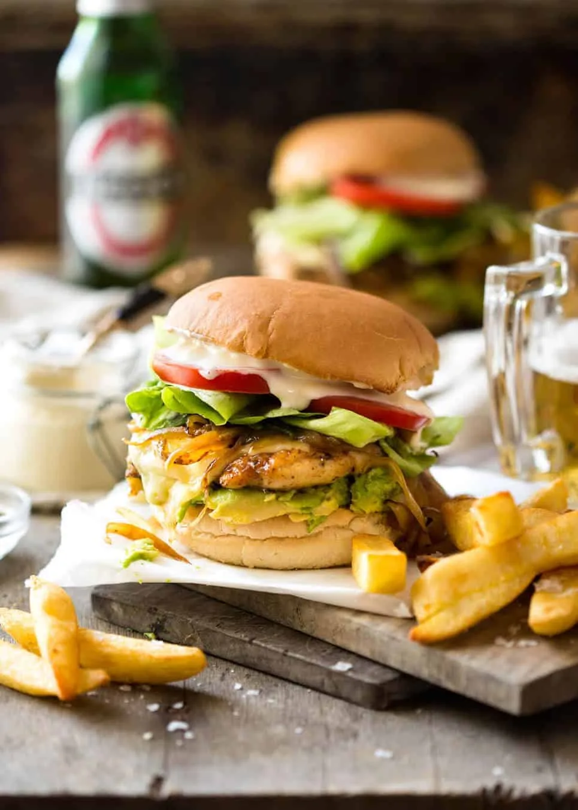

Burger

Description
Whether making beef Hamburgers, Steak Sandwiches or these Chicken Burgers, they’re quick to prepare and cook, then I lay out all the topping options and let everyone help themselves!
For a sensible meal option, I do tend to favour these Chicken Burgers over beef Hamburgers because they’re healthier – leaner meat, lower calories, lower fat. Just as tasty!
Ingredients
- Onion
- Garlic
- Carrot
- Celery
- Beef
- Canned Tomato
- Tomato Paste
- Red Wine
- Butter
- Flour
- Milk
Steps
- Heat oil in a large heavy based pot over medium heat. Add garlic, onion, celery and carrots. Cook for 10 minutes until softened and sweet – they should not brown (if they do, turn heat down).
- Add beef, turn heat up and cook the beef, breaking it up as you go.
- Once the beef has all turned brown, add the remaining Ragu ingredients EXCEPT the sugar.
- Stir then adjust the heat so it is bubbling very gently. Place the lid on and cook for 1.5 – 2 hours, stirring every now and then, then remove the lid and simmer for 30 minutes.
- The ragu is ready when the meat is really tender and the sauce has thickened and is rich. Adjust salt and pepper to taste, and add sugar if required.